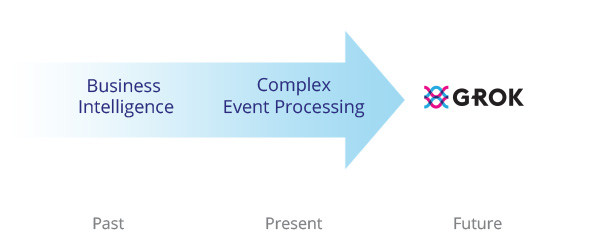

Numenta and Complex Event Processing
A question we get from time to time is, “How is Grok different from complex event processing systems?” Like Grok, CEP systems are all about streaming data, but Numenta and CEP systems use this data in different ways. We think Numenta and CEP are highly complementary and I wanted to take a moment to explain why.
A key capability of CEP systems is that they can perform database-like operations on streaming data - queries, joins, aggregations, mathematical operations, etc. As data comes in, the results of these operations are continuously updated. Need an instantaneous summary of your firm’s market positions? Need to know what the current load is on your cell sites? CEP systems are built to answer these types of questions and to do it continuously.
The second hallmark of CEP systems is triggering action. Knowing that your house is on fire is certainly important, but you really want to take action to put out the fire. CEP systems also allow you to create business logic around streaming data and then drive action from it. If a real-time key performance indicator is exceeded, logic can be written in the CEP system to trigger a response and take action.
This combination of capabilities - working with real-time data and creating a framework of logic around it - enable many companies to set aside legacy code bases for more flexible CEP environments. Because of this flexibility, you often find CEP systems at the heart of many real-time operational systems.
Grok extends CEP into the future
As we implement pilot projects with customers who use CEP, we’ve come to appreciate how Grok can be a powerful and valuable extension to their CEP deployments.
In a nutshell, Grok makes it easy to get predictions from and find anomalies in data streams. It’s certainly helpful to know what is happening now, but the next logical question to ask is, “what will happen next?”

The simple view is that business intelligence systems are focused on historical data, CEP systems focus on what is happening right now, and Grok is focused on what is most likely to happen in the future.
Real-time prediction
One of the pillars of Grok is its ability to develop high quality predictive models automatically. Data streams being used by a CEP system can be trivially repurposed to build predictive models of the data. The predictions from the Grok models can then be easily brought back into the CEP environment.
No doubt you’ve heard that building good enterprise scale predictive models can be hard for us humans. When you have thousands of data streams and you want to always use the latest information, it becomes even more challenging. Grok can build custom models for each data stream and do it automatically in a way that is always up to date.
Grok can provide customers with CEP systems with high quality predictions about what is most likely to happen and this information can be added to the mix of operational information to make the best decision and take the most appropriate actions.
Move from hand-built triggers to adaptive modelling
In addition to modelling many data streams automatically, Grok can also make the business logic that drives the action from CEP systems much more flexible and adaptive.
Many CEP applications look at thresholds of real time data and when these thresholds are violated, actions are triggered. One problem is that it can be a tedious and error prone task to configure these thresholds. But the real problem with thresholds (even moving thresholds) is what what was “normal” yesterday isn’t normal today. Businesses operate in a world that is constantly evolving and your systems can’t be hard-coded to the past.
Grok models learn continuously from data. Even when Grok is looking for anomalies, its models can adapt to find the “new normal” in your data, while still recognizing important historical anomalies. This adaptive behavior, when paired with CEP’s ability to act on data, is required if you want to drive intelligent action from your operational data.
With Grok’s focus on streaming data, automated model building, and continuous learning, we believe that Grok is an ideal match for CEP applications in finance, energy, and telecommunications.
I should mention that there are a number of excellent CEP system on the market, products like Oracle OEP, Sybase ESP, IBM InfoSphere Streams, and others. We’ll be talking more about Grok’s fit with these and other products in the coming weeks.